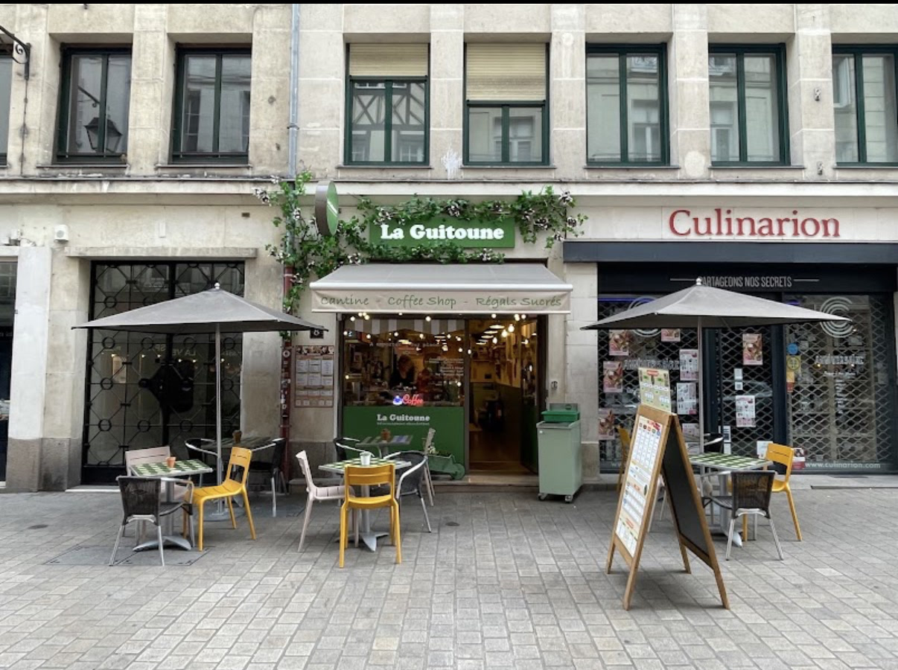
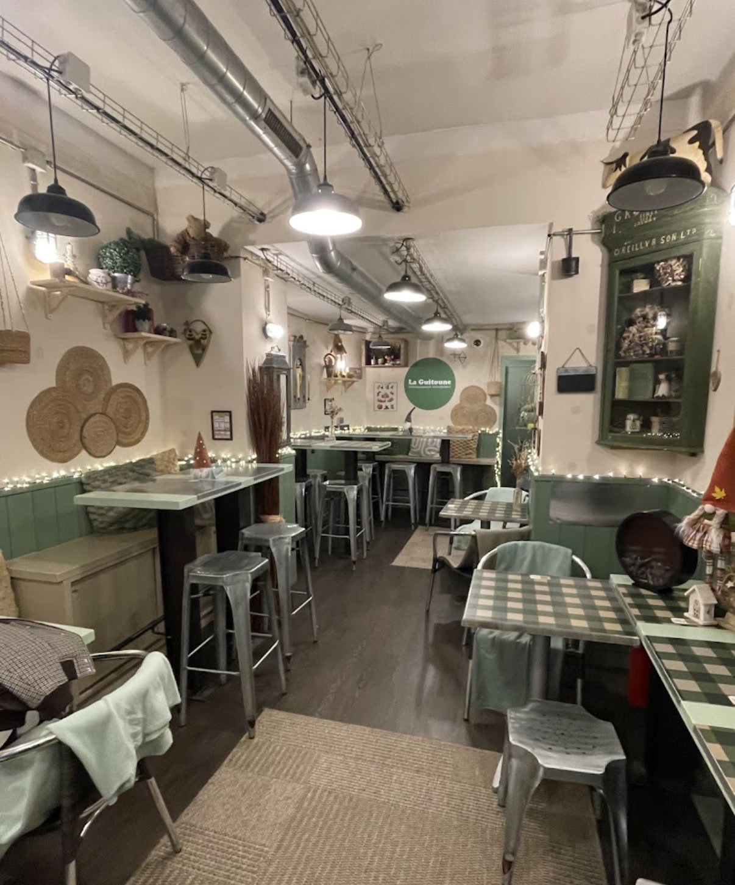

Cantine — Coffee shop — Régals sucrés — Nantes
La Guitoune
délicieusement réconfortant
Une guitoune, c'est une tente, un abri, un refuge. La nôtre est plantée au 8 rue des Carmes, au cœur du vieux Nantes : café, petit-déj, lunch et goûter, 100 % frais et préparés sur place.

la terrasse ! 8 rue des Carmes — entre les parasols, les chaises jaunes
Le refuge
gui·toune
nom féminin — argot affectueux
Tente, abri, petit refuge où l'on se pose, où l'on se réchauffe, et d'où l'on repart réconforté.
Ouverte au printemps 2025 par Valérie, La Guitoune est un refuge urbain, une halte où l'on vient seul ou en bande se poser autour d'une cuisine simple et sincère.
Boiseries sauge, nappes vichy, guirlandes et paniers d'osier : comme un chalet en pleine ville.
- Tout frais, tout maison — produits locaux, pain brioché d'un artisan boulanger nantais.
- Du matin au goûter — café, petit-déj, lunch, douceurs de l'après-midi.
- Sur place ou à emporter — en salle, en terrasse, ou dans le sac.

La carte, au mur
Des rolls, des bowls,
et des régals sucrés
Le roll de La Guitoune s'inspire de la guédille québécoise : un pain brioché moelleux, doré, généreusement garni. Tout est assemblé au comptoir, à la commande — comme sur les panneaux, au-dessus des machines.
sur pain brioché artisanal — seuls ou en formule
- Poulet rôti effiloché
- Pastrami de bœuf
- Saucisse de Francfort, relish de pickles
- Falafels de quinoa veggie
- Feta, billes de courgettes veggie
- Saumon fumé, cream cheese le fish
- Crevettes marinées le fish
riz vinaigré ou salade iceberg, crudités, sauce maison
- Chicken bowl
- Falafel bowl veggie
- Sea bowl, saumon fumé ou rillettes de thon le fish
- Recettes de saison à l'affichage
votre roll ou votre bowl, composé au comptoir
- Une base — tartinable + salade iceberg ou coleslaw
- Un ingrédient principal — au choix parmi la carte
- Trois crudités — fraîches du jour
- Une sauce — miel-moutarde, barbecue, balsamique, citron-yaourt…
- Un extra — pour les gourmands
du petit-déj au goûter, douceurs maison
- Cookies & muffins — framboise, pistache, Kinder
- Banana bread
- Viennoiseries du matin
- Boissons chaudes & froides maison
- Roll + boisson 9,50 €
- Roll + boisson + accompagnement ou dessert 12,90 €
- Roll + boisson + accompagnement + dessert 14,90 €
- Bowls dès 11,50 €
Carte indicative — recettes de saison, détails et prix du jour à l'affichage, au comptoir du 8 rue des Carmes.
Infos pratiques
On vous garde une place ?
| Lundi | fermé |
|---|---|
| Mardi | 9h30 – 15h30 |
| Mercredi | 9h30 – 15h30 |
| Jeudi | 9h30 – 15h30 |
| Vendredi | 9h30 – 16h00 |
| Samedi | 9h30 – 17h30 |
| Dimanche | fermé |